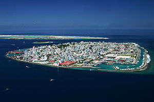

Розвинено рибальство (його вважають основою економіки), птахівництво. Добувають перлини, корали, мушлі. Вирощують кокосову пальму, хлібне дерево, банани, манго, маніок, батат, ямс, просо, рис, цибулю, перець. Однак країна не в змозі прогодувати своє населення.
Промислові підприємства зайняті передусім переробкою сільськогосподарської сировини та виловленої риби. Виготовляють також одяг, риболовецькі сіті, електронні компоненти. Поширеною є змішана форма власності за участю мальдівського державного та іноземного приватного капіталу.
Надання послуг морського транспорту є одним із найважливіших напрямків економічної діяльності країни. Місцевий транспорт — вітрильні та невеликі моторні судна. Головний морський порт — Мале. Мальдіви сполучено авіалініями з низкою європейських та азійських країн. Міжнародний аеропорт Хулуле (атол Мале).
Основні експортні товари — «мальдівська риба» (просолений в'ялений тунець, 97% вартості експорту), текстильні вироби, електронні компоненти, копра. Завдяки реекспортові країна щорічно одержує близько 10 млн $ США.
Імпортують переважно нафтопродукти, продовольство та споживчі товари.
Країна має значну зовнішню заборгованість. Міжнародний туризм — важливе джерело надходження валюти.
Головні зовнішньоторговельні партнери — Таїланд, США, Шрі-Ланка.